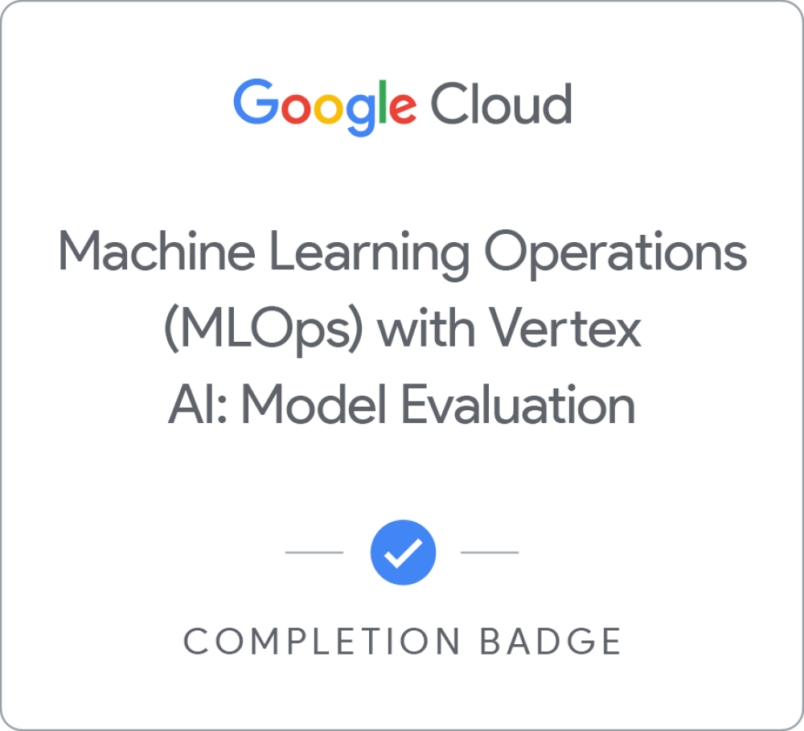
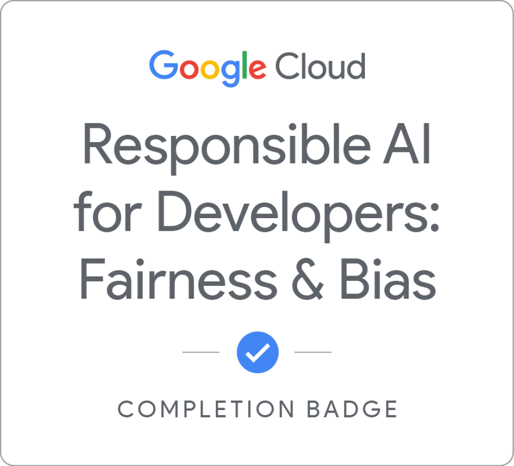

Jaguar Identification
Engineered a deep-learning AI‑driven computer vision system and visual pattern framework to optimize wildlife monitoring metrics, accelerating insight processing times for multi-domain conservation projects.
Tech: PyTorch, Vision Transformers (DINOv2, MegaDescriptor‑L), GeM pooling, ArcFace, batch‑hard triplet loss, identity‑balanced mAP.
Click here to explore more →Decision Lens
An evidence-grounded decision intelligence system that leverages Retrieval-Augmented Generation (RAG) and behavioral science literature to surface cognitive biases in high-stakes strategy.
Tech: Python, Claude for Legal Plugin, Proxy-Pointer RAG, FAISS/BM25 Hybrid Retrieval, Streamlit.
Click here to explore more →SonarAI: Voice Synthesis
A production-grade, privacy-preserving text-to-speech engine. Features dual-path inference for consistent multilingual built-in voices and zero-shot voice cloning, outputting broadcast-ready audio.
Tech: PyTorch, XTTS v2, Kokoro-82M, FastAPI, EBU R128 Normalization, SSML
Click here to explore more →Stocks Value Investor
A rules-driven quantitative equity screener applying Benjamin Graham and Peter Lynch review strategies to US and Indian stock markets. Features an LLM-powered investment thesis analyzer and a decoupled, sector-aware JSON rules engine.
Tech: Python, Streamlit, yfinance, Groq (LLaMA-3.3), SQLite, Docker
Click here to explore more →Bio Acoustics Identification
An automated sound event detection system for classifying wildlife in Brazil’s Pantanal. Utilizes a teacher-student distillation framework and FiLM metadata conditioning to identify species from complex, noisy soundscapes.
Tech: PyTorch, SED Head, FiLM Metadata Conditioning, Perch v2 Distillation, Noisy Student Self-Training.
Click here to explore more →Real-Time Face Recognition
A production-ready, real-time face recognition system featuring low-latency WebRTC streaming and state-of-the-art embedding extraction for secure identity verification.
Tech: InsightFace (buffalo_l), Gradio WebRTC, ONNX Runtime, HuggingFace Spaces.
Click here to explore more →Certifications

